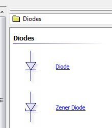
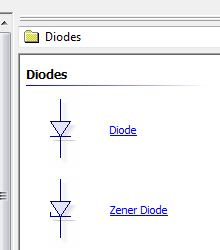
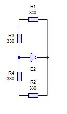
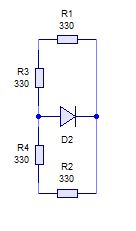
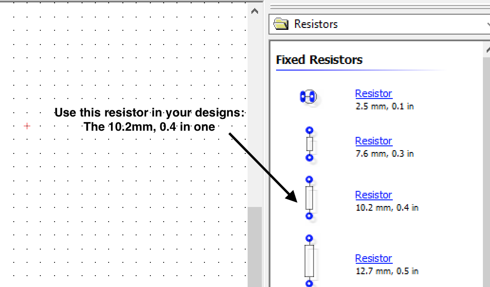
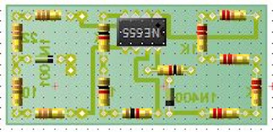
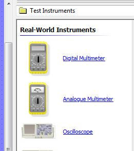

The Virtual Multimeter
Table of Contents
1 Circuit Design
- Before building a circuit, engineers will design and test their projects to ensure they work before they are manufactured. This is done using software that can simulate how the real circuit will work.
- The software we use in school is called Circuit Wizard. The icon can be found on your Desktop.

- Open up circuit wizard. When you open Circuit Wizard, the resource centre will open, you will need to close this, by simply clicking the red cross on the top right of the box.

- You will now need to open a new document. Click on the icon below. This will be found on the top left of the screen.

- Once this is opened, you will need to select the "Circuit with GENIE Flowchart" option.

- At the bottom of the page are your Tab option. Make Sure you have selected circuit diagram.

- On the right hand side are all your component choices. You will be abble to find all you resistors, diodes and 8-pin carrier components here. The 8-pin carrier will need to be a 8-pin dual-in-line option. See the images below.
 


- Now you can drag each component to the workspace and start designing your circuit. You are going to design the soldering licence here. Start with on resistor. Drag this across to the right place and then double click on it to change it to the correct value. I the component is the wrong way up, you can click on the icon below to adjust it.


- Now you can add another resistor and the connect them by clicking on the ends of the wire and dragging them to the next component.
 

- Now you can start designing the circuit diagram. Below is a partially completed circuit, you can design the circuit and complete the 'S' on your own.

2 PCB design
- Before starting your PCB design, make sure you have selected the 'PCB Layout' tab at the bottom of the page.

- Building the PCB follows the same process as making the circuit diagram. You can find all the components on the right and drag them across.

- You can now start populating the PCB. And wiring them up. You will need to select the 'track' icon at the top of the page to run the tracks.


- Now carry on with designing the rest of the PCB.

3 Virtual Testing
About the multimeter
Now you can start testing the components. Find the digital multimeter under the 'Test instruments' on the right hand side. 
- Drag the meter across to the PCB.
- We now need to start testing. At the bottom of the meter there are three connection. 'COM' is the common rail and the two other option can measure volts, ohms and low current. This is the one we will use. The last one is used for measuring high current, we will not be using this.
- As this is a virtual meter, there is no need to test the leads. You will need to remember to do this on the real meter.
- We will need to select the right scale for testing the component. You will need to select the 'ohm' scale and we are going to test one 22k resistor first. So you will need to select the range value on up from 22k which is 200k.
- Now connect the wires and press play at the top of the page and check your results.


- You can now experiment buy testing all the resistors.
Badge It
- Silver: Build the circuit diagram using Circuit Wizard. Take a screenshot or snip a picture and upload it.
- Gold: Design the PCB using Circuit Wizard. Take a screenshot or snip a picture and upload it.
- Platinum: Test one resistor from each of the letters on your soldering licence using a virtual multimeter. Also test the total resistance of the letter 'S'. Take screen shots or snip pictures to upload.